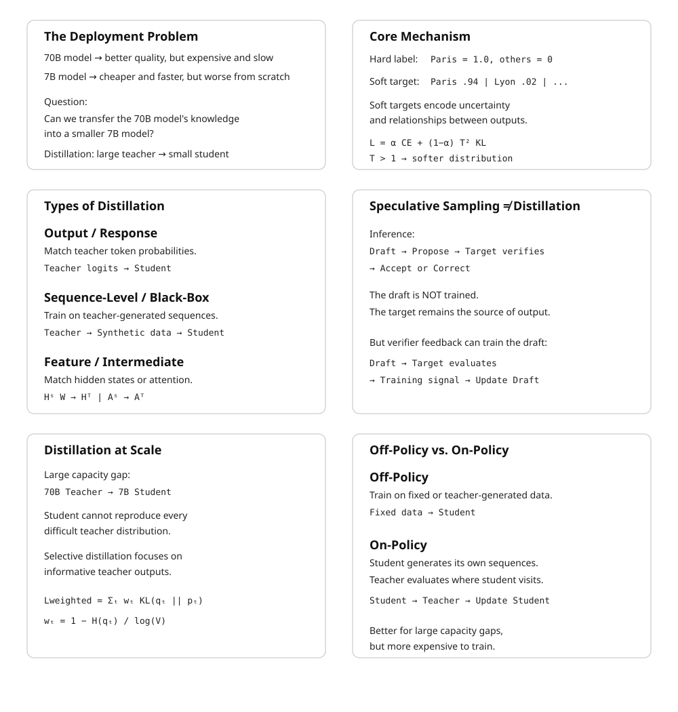

26 Distillation
The canonical question for this chapter: How do you transfer the knowledge of a large, expensive model into a smaller, cheaper one and why does training on a teacher’s output distributions produce a better student than training on the original data alone?
26.1 The Deployment Problem That Distillation Solves
Scaling laws favor large models. A 70B-parameter model achieves lower loss than a 7B-parameter model trained for the same number of tokens on the same data. But serving a 70B model in production costs roughly 10× more per token than serving a 7B model, more GPU memory, more compute per forward pass, more infrastructure. For latency-sensitive applications, the 70B model may not meet response time requirements at all.
The naive response is to train a smaller model from scratch. But a 7B model trained from scratch on the same data achieves meaningfully lower quality than a 70B model. The question is whether there is a better starting point for the 7B model than random initialization, whether the 70B model’s learned knowledge can be transferred to make the 7B model better than it would be from scratch on the same compute budget.
Distillation answers yes. Hinton, Vinyals, and Dean (2015) showed that training a small student model to match the output distribution of a large teacher model (rather than to match the one-hot targets of the original training labels) produces students that substantially outperform identically-sized models trained on the original data alone. The mechanism is information-theoretic: the teacher’s soft output distributions carry more signal per example than the hard labels, because they encode the teacher’s uncertainty and the relative similarity between classes or tokens.
26.2 Knowledge Distillation: The Core Mechanism
26.2.1 Hard Labels vs. Soft Targets
In standard training, the loss at each position is the cross-entropy between the model’s predicted distribution and a one-hot target: probability 1.0 on the correct token, probability 0.0 on all others. The one-hot target discards the structure of the probability space, it treats “the wrong answer” as a single undifferentiated category.
A teacher model’s output distribution over the vocabulary is richer. For a prompt ending in “The capital of France is”, a teacher model might assign: - 0.94 probability to “Paris” - 0.02 probability to “Lyon” - 0.01 probability to “Marseille” - 0.003 probability to “Brussels” - smaller probabilities to hundreds of other tokens
The non-Paris probabilities carry information. “Lyon” being more probable than “Brussels” encodes that Lyon is a French city, that the model knows France has multiple major cities, and that cities structurally fit this slot better than countries do. A student trained to match this distribution learns all of these relationships from a single example. A student trained on the one-hot target “Paris” learns only that “Paris” is correct and the rest of the probability mass is uninformative noise in the gradient signal.
Hinton et al. formalized this with temperature-scaled softmax. The teacher’s logits \(z_i\) are converted to probabilities using a temperature \(T\):
\[ q_i^T = \frac{\exp(z_i / T)}{\sum_j \exp(z_j / T)} \]
At \(T = 1\), this is the standard softmax. At \(T > 1\), the distribution is softened: high-probability tokens become less dominant and low-probability tokens become more visible. At \(T \to \infty\), the distribution approaches uniform. The same temperature is applied to the student’s logits when computing the distillation loss, so the student learns to reproduce the teacher’s softened distribution.
26.2.2 The Distillation Loss
The student is trained on a weighted combination of two losses:
\[ \mathcal{L}_{\text{distill}} = \alpha \cdot \mathcal{L}_{\text{CE}}(y, p_s) + (1 - \alpha) \cdot T^2 \cdot \mathcal{L}_{\text{KL}}(q^T_\tau, p^T_s) \]
where: - \(\mathcal{L}_{\text{CE}}(y, p_s)\) is the standard cross-entropy loss between the student’s predictions and the ground-truth hard labels \(y\) - \(\mathcal{L}_{\text{KL}}(q^T_\tau, p^T_s)\) is the KL divergence between the teacher’s temperature-softened distribution \(q^T\) and the student’s temperature-softened distribution \(p^T_s\) - \(\alpha \in [0, 1]\) controls the relative weight of the two losses - \(T^2\) is a scaling factor that compensates for the reduced magnitude of gradients from the softened distributions
The \(T^2\) scaling term deserves explanation. When temperature \(T\) is applied, the softmax output values are compressed toward \(1/V\) (where \(V\) is the vocabulary size). The gradients of the KL loss with respect to the student’s logits are proportional to \(1/T^2\) relative to the hard-label gradients. Multiplying by \(T^2\) restores the gradient magnitudes to the same scale, ensuring that the distillation signal and the hard-label signal contribute comparably to the weight update regardless of temperature.
In practice for language model distillation: - \(\alpha = 0.5\) is a common default, giving equal weight to both losses - \(T = 2\) to \(T = 4\) is typical; higher temperatures are used when the teacher is much more confident than the student - When ground-truth labels are unavailable (the student is trained on teacher-generated text), the hard-label term is dropped: \(\alpha = 0\), pure distillation
26.3 Types of Distillation for Language Models
Distillation for language models comes in several flavors that differ in what is transferred from teacher to student, and when.
26.3.1 Output (Response) Distillation
The simplest form: train the student to match the teacher’s token-level output distributions. For each token position in a training sequence, the teacher produces a probability distribution over the vocabulary; the student is trained to minimize KL divergence from that distribution.
This requires running the teacher model on the training corpus to generate soft targets, which are then stored and used for student training. Storage cost is substantial: for a vocabulary of 100,000 tokens and float16 precision, each token position requires 200 KB of soft targets. A training corpus of 100 billion tokens would require 20 petabytes of stored soft targets which is infeasible. In practice, soft targets are either computed on-the-fly during student training (requiring the teacher to be available in memory alongside the student) or truncated to the top-\(k\) logits (storing only the \(k\) highest teacher probabilities, discarding the long tail which contributes little signal).
Top-\(k\) logit storage with \(k = 20{,}000\) retains roughly 95% of the KL divergence signal while reducing storage by 5×. DistilBERT and DistilGPT-2 used top-\(k\) approximations for exactly this reason.
26.3.2 Sequence-Level (Black-Box) Distillation
When the teacher’s internal logits are unavailable (either because it is a proprietary API or because storing full distributions is infeasible) the student can be trained on sequences generated by the teacher rather than on the teacher’s distributions.
The student treats teacher-generated sequences as training data and minimizes standard next-token prediction loss against them. This is called black-box distillation or data distillation. It is strictly less efficient than distribution-level distillation (the student sees only samples from the teacher’s distribution, not the distribution itself) but it is the only option when internal model access is unavailable.
This is the mechanism underlying most current synthetic data pipelines. When GPT-4 generates 10,000 instruction-response pairs and those pairs are used to train a smaller model, the smaller model is being distilled from GPT-4 via sequence-level distillation. The term “synthetic data” emphasizes the data generation aspect; the term “distillation” emphasizes the knowledge transfer aspect.
26.3.3 Feature (Intermediate) Distillation
Rather than matching only the teacher’s output distributions, feature distillation trains the student to match the teacher’s intermediate representations, the hidden states at each layer. This transfers more information but requires architectural compatibility between teacher and student: the student’s hidden dimension must match the teacher’s, or an additional projection layer must bridge the mismatch.
PKD (Patient Knowledge Distillation, Sun et al., 2019) distills BERT by matching the student’s intermediate layer outputs to selected layers of the teacher. TinyBERT (Jiao et al., 2020) extends this to match attention matrices, hidden states, and the embedding layer simultaneously, using learned projection matrices to handle dimension mismatches:
\[ \mathcal{L}_{\text{attn}} = \frac{1}{h} \sum_{i=1}^{h} \text{MSE}(A_i^S, A_i^T) \]
\[ \mathcal{L}_{\text{hidden}} = \text{MSE}(H^S W_h, H^T) \]
where \(A_i^S\) and \(A_i^T\) are the student’s and teacher’s attention matrices for head \(i\), \(H^S\) and \(H^T\) are hidden states, and \(W_h\) is a learned projection. TinyBERT achieves 96.8% of BERT-base performance at 7.5× faster inference and 7.5× smaller model size, the most favorable efficiency tradeoff published for BERT-family distillation.
Feature distillation is less commonly applied to generative LLMs, where architectural differences between teacher and student are larger and the intermediate representations are harder to align meaningfully. Attention pattern matching works well when the student has the same number of heads as the teacher but fails when the student uses GQA and the teacher uses MHA, for example.
26.3.4 Speculative Sampling and Its Connection to Distillation
Speculative sampling (covered in the Decoding and Sampling chapter) is primarily an inference technique, not a model-training technique. It uses two models: a small, fast draft model and a large, more accurate target model (also called the verifier). The draft model quickly generates several candidate tokens. The target model then evaluates these tokens and decides which ones to accept. Rejected tokens are replaced by samples from a correction distribution defined using the target and draft probabilities.
The important property is that this procedure preserves the target model’s output distribution. In other words, although the draft model proposes the tokens, the final sequence is distributed exactly as if it had been generated directly by the target model.
This is not distillation because the draft model is not being trained to imitate the target model. The target model is simply being used to verify the draft model’s proposals during inference:
[ ]
However, the same verification process can provide a training signal for improving the draft model. If we fine-tune the draft model so that it proposes tokens that the target model is more likely to accept, the draft model gradually learns to approximate the target model’s behavior. The target model therefore acts as a teacher, while the draft model acts as a student.
Conceptually, the process becomes:
[ ]
This creates a connection to knowledge distillation. The goal is no longer simply to use the draft model for faster inference; we are actively training it to behave more like the target model. In this setting, the target model provides the supervision signal, often through its probability distribution or through feedback about which draft tokens it accepts.
Thus, it is useful to distinguish two cases:
- Speculative sampling: the draft model is used to accelerate inference, while the target model remains the source of the final output distribution.
- Distillation-inspired draft training: feedback from the target model is used to improve the draft model so that it generates proposals closer to the target model’s distribution, increasing the acceptance rate and potentially making speculative sampling more efficient.
The key idea is therefore not that speculative sampling itself is a form of distillation. Rather, the verifier’s feedback during speculative decoding can be used as a training signal to distill some of the target model’s behavior into the draft model.
26.4 Distillation at Scale: LLM-to-LLM
Distilling a 175B-parameter teacher into a 7B-parameter student is qualitatively different from distilling a 110M-parameter teacher into a 66M-parameter student. The capacity gap is much larger and the student’s ability to represent the teacher’s distributions is correspondingly more limited.
26.4.1 The Capacity Gap Problem
A 7B-parameter student cannot faithfully reproduce all of a 70B teacher’s probability distributions. For difficult predictions (ambiguous sequences where the teacher assigns roughly equal probability to multiple continuations) the student lacks the capacity to represent the full distribution and will collapse to a lower-entropy approximation. The distillation loss will be large at these positions regardless of training duration.
The practical implication: distillation with a very large capacity gap produces students that are good at easy predictions (common patterns, high-confidence teacher outputs) but poor at difficult predictions (rare patterns, uncertain teacher outputs). This is not a failure of the distillation algorithm, it is a fundamental capacity constraint. A 7B model cannot represent what a 70B model knows; it can only approximate it.
This motivates selective distillation: targeting the distillation loss at positions where the teacher’s distribution is most informative and down-weighting positions where the teacher is either highly confident (low information in the soft targets) or highly uncertain (student cannot match the distribution regardless). The confidence-weighted distillation loss:
\[ \mathcal{L}_{\text{weighted}} = \sum_t w_t \cdot \mathcal{L}_{\text{KL}}(q^T_t, p^T_{s,t}) \]
where \(w_t = 1 - H(q_t) / \log V\) is a weight that decreases as the teacher’s entropy \(H(q_t)\) approaches its maximum \(\log V\). This concentrates the distillation signal on positions where the teacher’s distribution is informative, neither trivially predictable nor maximally uncertain.
26.4.2 On-Policy vs. Off-Policy Distillation
Standard distillation is off-policy: the student is trained on sequences from the original training corpus or teacher-generated sequences, which may not match the distribution of sequences the student itself would generate.
On-policy distillation trains the student by having it generate sequences, then computing the KL divergence between the student’s and teacher’s distributions on those student-generated sequences. This ensures the student receives gradient signal at the points in distribution space it actually visits, rather than points from a fixed dataset that may be far from the student’s current behavior.
GKD (Generalized Knowledge Distillation, Agarwal et al., 2024) formalizes this distinction and shows that on-policy distillation consistently outperforms off-policy distillation for language models, particularly at large capacity gaps. The improvement is most pronounced for open-ended generation tasks where the student’s distribution can deviate substantially from the training corpus distribution.
The cost of on-policy distillation is that it requires generating sequences during training, which adds inference-time compute (running the student in generation mode) to the training-time compute (running the student and teacher in forward-pass mode). This roughly doubles the per-step training cost relative to off-policy distillation.
26.5 Reasoning Distillation
The distillation of reasoning capability in particular chain-of-thought reasoning, deserves separate treatment because it involves transferring a qualitatively different type of knowledge than factual recall or language modeling.
26.5.1 Chain-of-Thought Distillation
Large models (70B+) benefit substantially from chain-of-thought prompting: producing a step-by-step reasoning trace before the final answer significantly improves accuracy on mathematical, logical, and multi-step tasks. Small models (7B and below) receive less benefit from standard CoT prompting, apparently because they lack the capacity to generate accurate reasoning traces.
Distillation of reasoning capability from a large teacher to a small student involves training the student on teacher-generated reasoning traces, not just teacher-generated final answers. The student learns both to produce reasoning traces (the process) and to arrive at correct answers (the outcome).
Ho et al. (2022) showed that a 250M-parameter student trained on GPT-3’s chain-of-thought outputs substantially outperforms a 540B-parameter model prompted with standard CoT on several reasoning benchmarks, demonstrating that the reasoning capability can be compressed to a dramatically smaller model when the teacher’s reasoning traces are used as training targets.
26.5.2 Step-Level vs. Outcome-Level Supervision
A key design choice in reasoning distillation is whether to supervise the student at the level of individual reasoning steps or only at the final answer.
Outcome-level supervision trains the student to produce the correct final answer, regardless of the reasoning path taken. This is what standard sequence-level distillation on teacher-generated outputs provides. The student may learn shortcuts or alternative reasoning paths that differ from the teacher’s.
Step-level supervision trains the student to match the teacher’s intermediate reasoning steps, not just the final answer. This requires either parsing the teacher’s reasoning traces into discrete steps (fragile) or using a process reward model that scores each step’s quality (expensive).
For mathematical reasoning, step-level supervision produces more reliable generalization, students that have learned to execute each reasoning step correctly generalize better to novel problem structures than students trained only on correct final answers.
26.5.3 DeepSeek-R1 as Reasoning Distillation
DeepSeek-R1 (2025) provides one of the most striking examples of reasoning distillation at scale. DeepSeek’s large reasoning model (671B parameters) was used to generate long reasoning traces on a diverse set of mathematical, coding, and logical problems. These traces (including both correct and incorrect reasoning paths, with the correct paths labeled) were used to train smaller distilled models at 1.5B, 7B, 14B, 32B, and 70B parameter scales.
The 70B distilled model achieved performance competitive with o1-level reasoning on mathematical benchmarks, despite being trained for a fraction of the compute of the original reasoning model. The 7B distilled model substantially outperformed models of equivalent size that had not been trained on reasoning traces. The results established reasoning distillation as a practical technique for transferring deliberate reasoning capability to deployable model sizes.
26.6 Self-Distillation and Compression Without a Teacher
A model can be distilled from a previous version of itself, or from a higher-capacity configuration of the same architecture. These self-distillation approaches do not require a separate teacher model.
26.6.1 Born-Again Networks
Furlanello et al. (2018) showed that training a model of the same architecture to reproduce its own predictions (using the trained model as teacher for a freshly initialized student of identical size) consistently improves performance. The improvement comes from the same mechanism as standard distillation: the soft targets from the trained model carry more gradient signal than the original hard labels. Repeating this process (the student becomes the teacher for the next generation) produces “born-again network ensembles” that outperform the original model despite having identical capacity.
For language models, self-distillation is sometimes applied as a final training stage: after a full training run, the model is used as a teacher for an additional fine-tuning pass over high-quality data. The model corrects its own errors, sharpens its distributions on high-confidence outputs, and reduces inconsistency across similar inputs.
26.6.2 Layer Dropping and Progressive Shrinking
A different approach to distillation without a separate teacher: start with a large trained model and progressively remove layers or attention heads, fine- tuning after each removal to recover performance. This is sometimes called structured pruning but is mechanistically similar to distillation when the remaining layers are fine-tuned to reproduce the full model’s behavior.
The Michel et al. (2019) analysis of BERT attention heads found that many attention heads can be removed with minimal performance impact, and that the removal order matters: removing the least important heads first and fine-tuning after each step produces much better results than removing all low-importance heads simultaneously. This sequential pruning-and-fine-tuning procedure is equivalent to distilling the pruned model from the full model after each step.
26.7 Distillation vs. Fine-Tuning vs. Training from Scratch
The three primary approaches to obtaining a capable small model have different cost structures, performance profiles, and use cases.
Training from scratch on the original data gives the most architectural freedom (the student can use any architecture, vocabulary, and training procedure) and avoids any intellectual property concerns about using a proprietary teacher’s outputs. The cost is that the student achieves significantly lower quality than either distillation or fine-tuning at the same parameter count, because it lacks any guidance from a better model. Scaling laws predict the outcome exactly: the trained-from-scratch model follows the power law for its size and data budget.
Fine-tuning a pretrained model is the dominant paradigm for adapting general models to specific domains or tasks. Fine-tuning starts from a pretrained checkpoint (which already encodes language understanding and world knowledge) and adjusts weights to improve performance on a target distribution. Fine-tuning is fast and effective but does not produce a smaller model: the student has the same parameter count as the starting checkpoint.
Distillation produces a smaller model with better performance than training from scratch at the same size. It requires access to either a teacher model’s outputs or the teacher’s internal distributions, and it requires a training run of the student (unlike pure inference-time compression techniques like quantization). The performance gain over training from scratch is real and consistent, but the gap between a distilled 7B model and the original 70B teacher is substantial, distillation compresses knowledge but does not fully preserve it.
26.8 Distillation and Quantization: Stacking Compression
Distillation and quantization are complementary compression techniques that can be applied together. Quantization reduces precision of weights (FP32 → INT8 → INT4) and reduces memory and sometimes compute cost. Distillation reduces model size (70B → 7B parameters) and reduces memory and compute cost.
Applied in sequence (distill to a small model, then quantize) the compression factors multiply. A 70B model quantized to INT4 occupies roughly 35 GB (70B × 0.5 bytes/param), which fits on a single H100 but with no headroom. A 7B model distilled from the 70B model and then quantized to INT4 occupies approximately 3.5 GB, fitting on a consumer GPU with substantial headroom.
26.9 Key Takeaways
- Distillation trains a small student model to match a large teacher model’s output distributions rather than hard training labels; the soft targets carry more information per example because they encode the teacher’s uncertainty and the relative similarity between wrong answers.
- The distillation loss combines cross-entropy on hard labels and KL divergence from temperature-softened teacher distributions; the \(T^2\) scaling factor compensates for reduced gradient magnitudes from the softened distributions.
- Temperature scaling softens the teacher’s output: at \(T = 1\) the standard distribution is used; at \(T > 1\) low-probability tokens become more visible, providing richer gradient signal to the student.
- Output distillation requires either on-the-fly teacher inference or storing soft targets; full vocabulary storage at 100k tokens costs 200 KB per token position, making top-\(k\) truncation (\(k \approx 20{,}000\)) standard practice.
- Black-box (sequence-level) distillation — training on teacher-generated text rather than teacher distributions — is the mechanism underlying most synthetic data pipelines; it is less efficient than distribution-level distillation but requires no access to teacher internals.
- Feature distillation matches intermediate layer representations as well as outputs; TinyBERT achieves 96.8% of BERT performance at 7.5× smaller size by matching attention matrices and hidden states with learned projections.
- The capacity gap is the binding constraint for large-to-small distillation: a 7B student cannot faithfully represent a 70B teacher’s distributions at difficult, high-entropy positions regardless of training duration.
- On-policy distillation — generating student sequences and computing KL divergence on them — outperforms off-policy distillation at large capacity gaps, at the cost of inference-time compute during training.
- Reasoning distillation transfers chain-of-thought capability by training on teacher-generated reasoning traces; DeepSeek-R1 distilled reasoning traces from a 671B model into models as small as 7B with substantial reasoning capability retained.
- Distillation and quantization are complementary: distilling 70B → 7B and then quantizing to INT4 reduces memory from ~140 GB to ~3.5 GB, a 40× compression that makes the model runnable on a consumer GPU.

26.10 Further Reading
Hinton, G., Vinyals, O., & Dean, J. (2015). Distilling the Knowledge in a Neural Network. NeurIPS Deep Learning Workshop. — The founding paper; the temperature-scaled softmax and the \(T^2\) gradient scaling are introduced here; the MNIST and speech recognition experiments establish the mechanism cleanly.
Sanh, V., Debut, L., Chaumond, J., & Wolf, T. (2019). DistilBERT, a distilled version of BERT: smaller, faster, cheaper and lighter. NeurIPS EMC2 Workshop. — The most cited practical distillation result; the 40% size reduction at 97% GLUE performance defined practitioner expectations for distillation efficiency.
Jiao, X., et al. (2020). TinyBERT: Distilling BERT for Natural Language Understanding. EMNLP. — Extends distillation to attention matrices and hidden states with learned projections; the two-stage distillation procedure (general pre-training distillation then task-specific distillation) is the key engineering contribution.
Ho, N., et al. (2022). Large Language Models are Reasoning Teachers. ACL. — Demonstrates chain-of-thought distillation; the result that a 250M student trained on GPT-3 CoT outputs outperforms much larger models prompted with CoT is the key finding.
Agarwal, R., et al. (2024). On-Policy Distillation of Language Models: Learning from Self-Generated Mistakes. ICLR. — Introduces GKD and the on-policy vs. off-policy distillation distinction for language models; the theoretical analysis of why on-policy signal matters at large capacity gaps is the key contribution.
Furlanello, T., Lipton, Z., Tschannen, M., Itti, L., & Anandkumar, A. (2018). Born Again Neural Networks. ICML. — Demonstrates that self- distillation improves performance; the ensemble interpretation of born-again networks is the key theoretical framing.
DeepSeek-AI. (2025). DeepSeek-R1: Incentivizing Reasoning Capability in LLMs via Reinforcement Learning. arXiv. — Covers the distillation of reasoning traces from the 671B model to 1.5B–70B student models.
Michel, P., Levy, O., & Neubig, G. (2019). Are Sixteen Heads Really Better than One? NeurIPS. — Analysis of attention head importance in BERT; the finding that most heads can be removed with minimal impact motivates structured pruning approaches; the sequential pruning-and-fine-tuning result motivates the distillation framing.